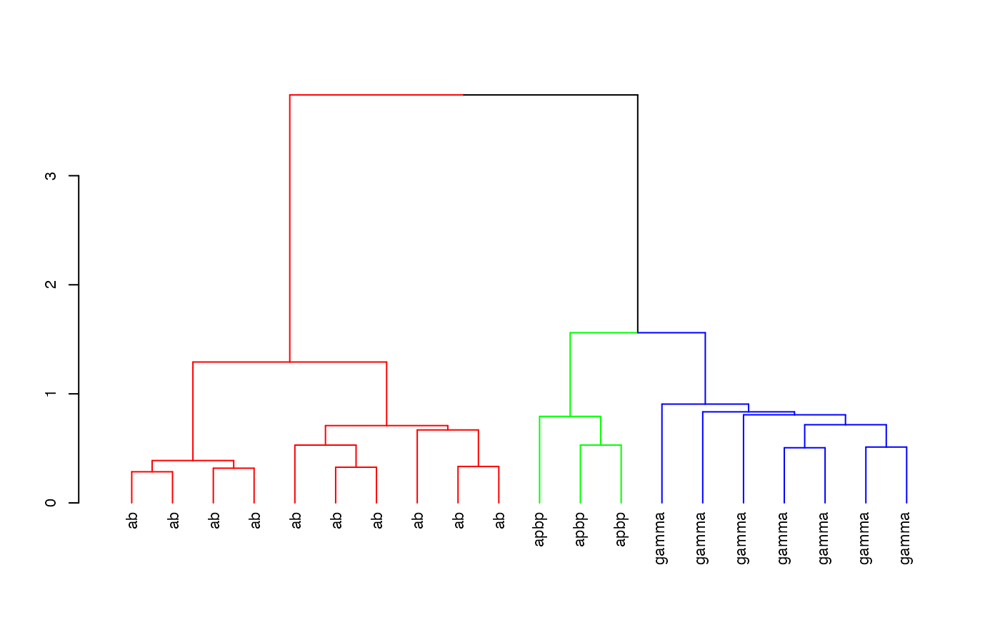

Install the package if required
install.packages('nat.nblast', dependencies = TRUE)Load the package and set up for knitr / 3D snapshot figures
library(nat.nblast)
rgl::setupKnitr()First we create a 20 x 20 NBLAST all by all score matrix for 20 Kenyon cells included with the nat package
library(nat)
kcscores <- nblast_allbyall(kcs20)Hierarchically cluster the Kenyon scores and divide the clustering into 3 groups
hckcs <- nhclust(scoremat=kcscores)## The "ward" method has been renamed to "ward.D"; note new "ward.D2"library(dendroextras)
dkcs <- colour_clusters(hckcs, k=3)Plot a dendrogram of the clustering, with leaves labelled by true neuron type
labels(dkcs) <- with(kcs20[labels(dkcs)], type)
par(cex=.7) # so labels are legible
plot(dkcs)